CAN COMPUTER THINK?
CAN THEY FEEL?
CAN THEY FEEL?
By Yoav Shoam
I dont’t know the answers to these questions, but
at least I know that I don’t. I also know that most
arguments of the form “Surely computers can’t X
since…” don’t hold up to close scrutiny. It doesn’t
necessarily mean that the onclusion is wrong,
but the argument usually is.
One way to start stretching one’s intuition is to
travel up and down the complexity hierarchy, both
animate and inanimate. Can humans think and
feel? Surely. Can dogs? It seems so. Can birds?
Slugs? Drosophila? Much philosophical ink has
been spilled on this topic, and we still don’t have
crisp answers. But one way or another, it seems
easier to ascribe mental qualities to more complex
beings.


WHAT COMPUTERS
REALLY KNOW?
And so it is with machines. We don’t seem
to agonize over whether a light switch can
think. We usually don’t about toasters either.
The situation is less clear with our TiVo, and
is squarely on the table when it comes to our
computers (setting aside the fact that all the
other artifacts mentioned — including some
light switches - are gradually also becoming
computers, albeit relatively simple ones). It just
doesn’t seem useful to speak about a light switch
as having beliefs and making choices; we have
a much simpler mechanistic explanation of its behavior.
With our PCs the situation is different. While they are fundamentally electro-mechanical devices based on tiny switches, they are much too complex to speak about usefully in terms of their basic operations – even their basic digital representation, let alone the analog one. Much of what we do in computer science is create abstractions that help us interact with computers. every programming language is an example. And so we often find it useful to say that the computer “knows” our address, “is trying to connect to the internet”, is “choosing the best driving route for us”, and indeed “has made a mistake,” even though we know full well it is “just executing its program.”
You’ve crossed the line when you speak about computers feeling or being conscious. As one starts to mull these issues, it’s not uncommon to encounter something like the following stage: “Ok, I can see why one might speak about a computer knowing and, say, planning. While these are different from the human notions, they have a lot in common and it’s useful to think in these terms. But you’ve crossed the line when you speak about computers feeling or being conscious. Surely they can’t because…” This leads to further discussion of what computing is, and a re-examination of the intuition regarding mental qualities. For example, it is not hard to show settings in which ascribing feelings to computer programs is both coherent and useful. And as one delves deeper into it, one is forced to ask where the ascription to humans is not every bit as pragmatic as it is to machines. The answers vary, as they should, but more often than not the term “surely” is discarded.
REALLY KNOW?
And so it is with machines. We don’t seem
to agonize over whether a light switch can
think. We usually don’t about toasters either.
The situation is less clear with our TiVo, and
is squarely on the table when it comes to our
computers (setting aside the fact that all the
other artifacts mentioned — including some
light switches - are gradually also becoming
computers, albeit relatively simple ones). It just
doesn’t seem useful to speak about a light switch
as having beliefs and making choices; we have
a much simpler mechanistic explanation of its behavior.
With our PCs the situation is different. While they are fundamentally electro-mechanical devices based on tiny switches, they are much too complex to speak about usefully in terms of their basic operations – even their basic digital representation, let alone the analog one. Much of what we do in computer science is create abstractions that help us interact with computers. every programming language is an example. And so we often find it useful to say that the computer “knows” our address, “is trying to connect to the internet”, is “choosing the best driving route for us”, and indeed “has made a mistake,” even though we know full well it is “just executing its program.”
You’ve crossed the line when you speak about computers feeling or being conscious. As one starts to mull these issues, it’s not uncommon to encounter something like the following stage: “Ok, I can see why one might speak about a computer knowing and, say, planning. While these are different from the human notions, they have a lot in common and it’s useful to think in these terms. But you’ve crossed the line when you speak about computers feeling or being conscious. Surely they can’t because…” This leads to further discussion of what computing is, and a re-examination of the intuition regarding mental qualities. For example, it is not hard to show settings in which ascribing feelings to computer programs is both coherent and useful. And as one delves deeper into it, one is forced to ask where the ascription to humans is not every bit as pragmatic as it is to machines. The answers vary, as they should, but more often than not the term “surely” is discarded.
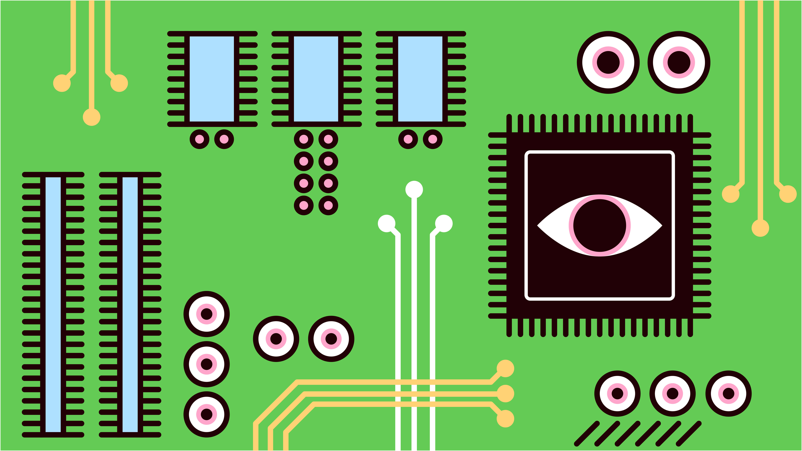
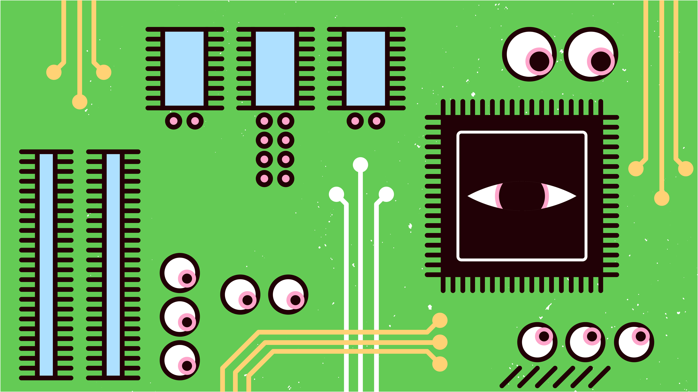
 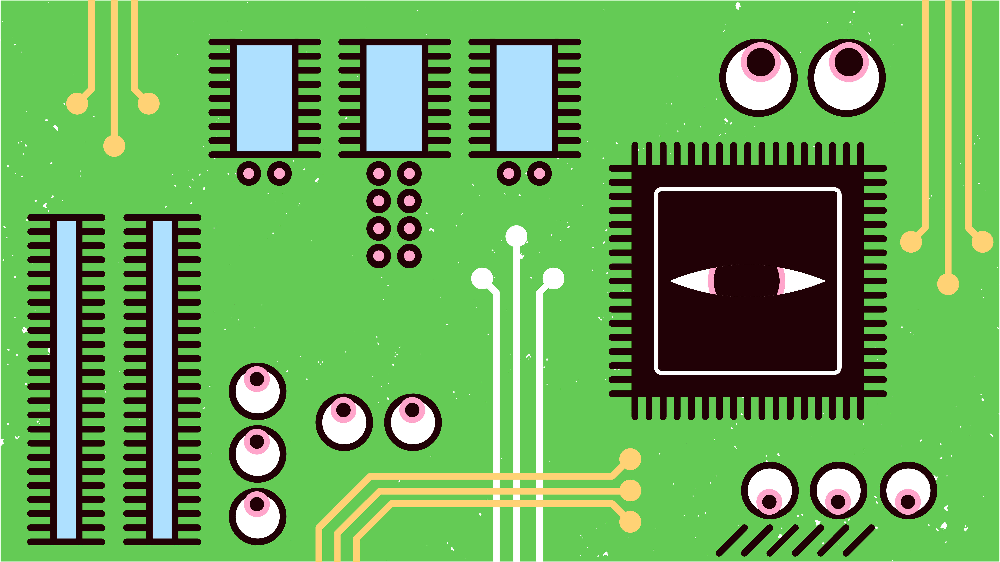
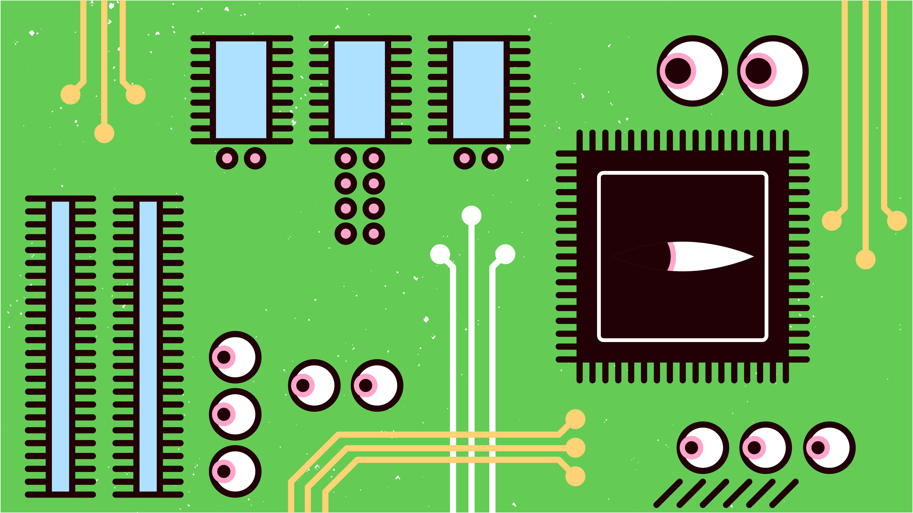
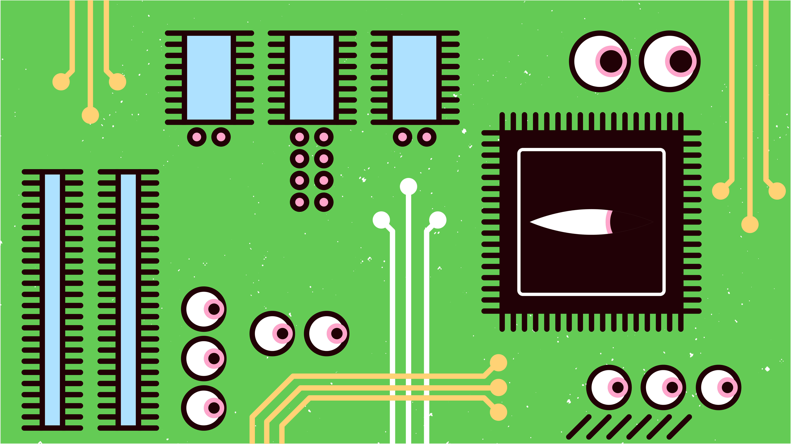
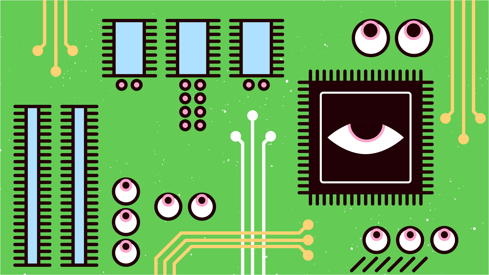
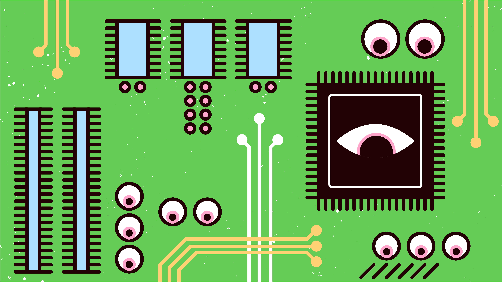
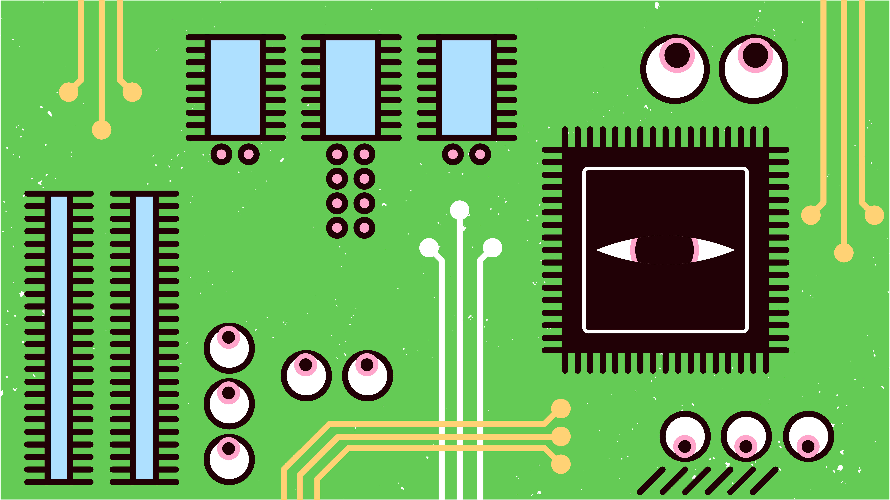
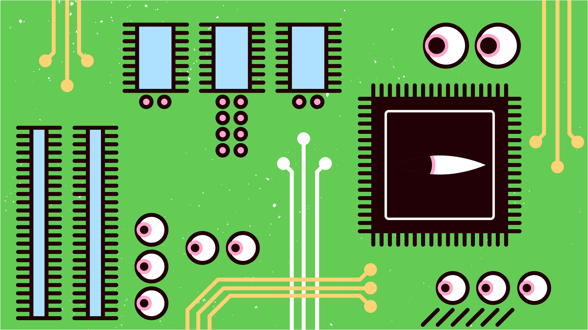
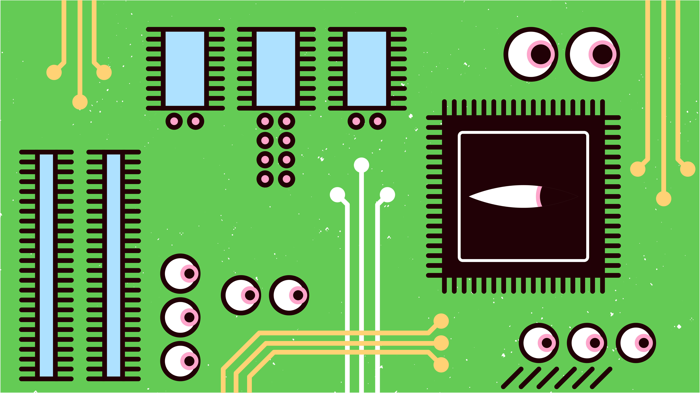
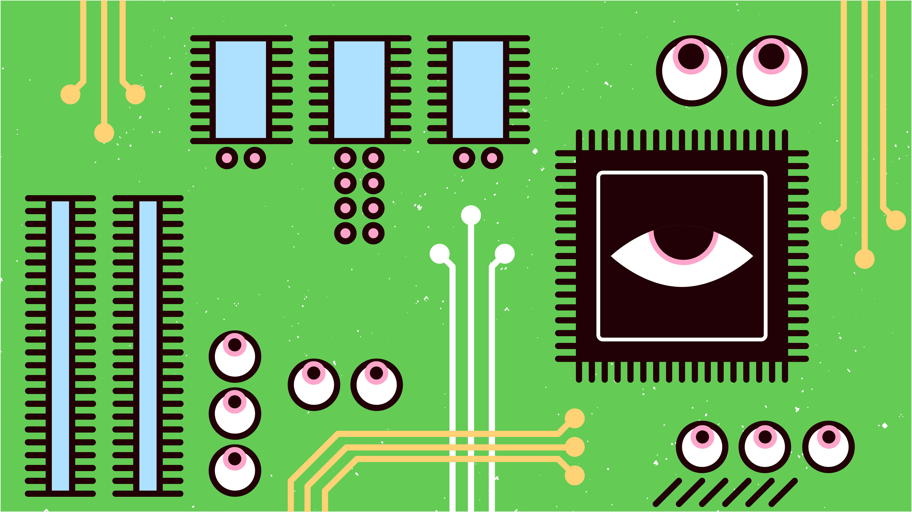
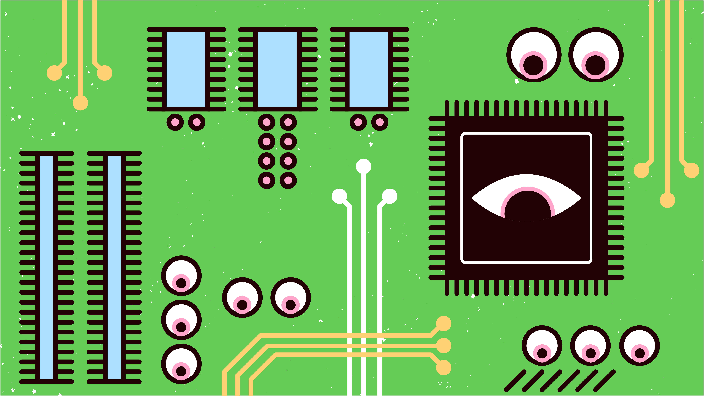
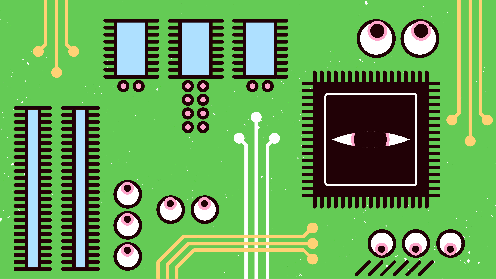
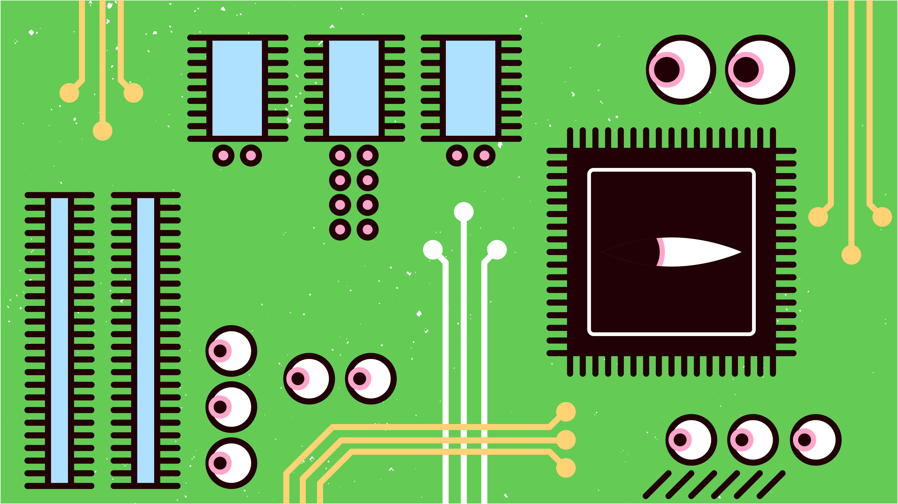
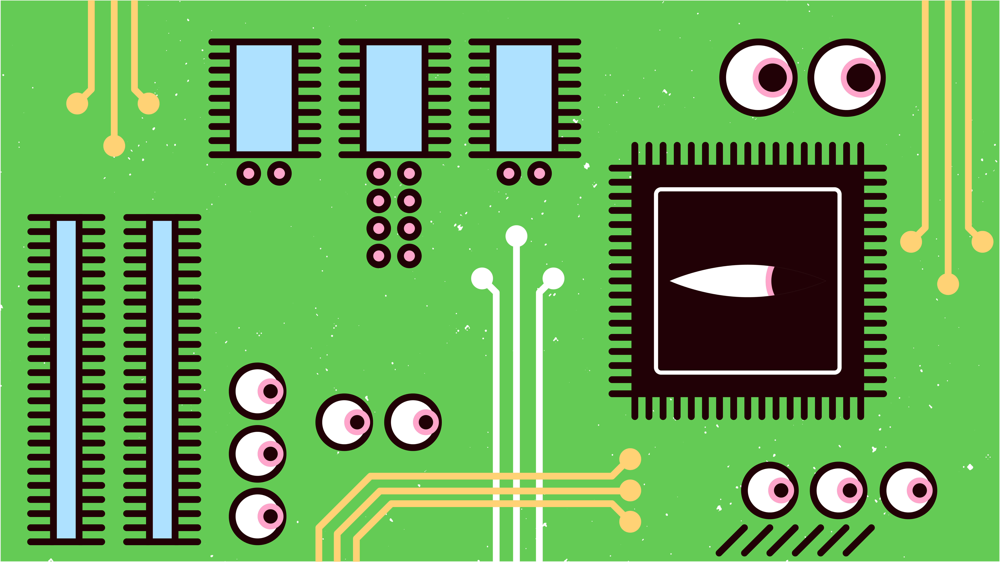
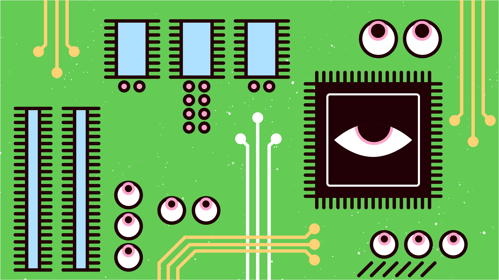
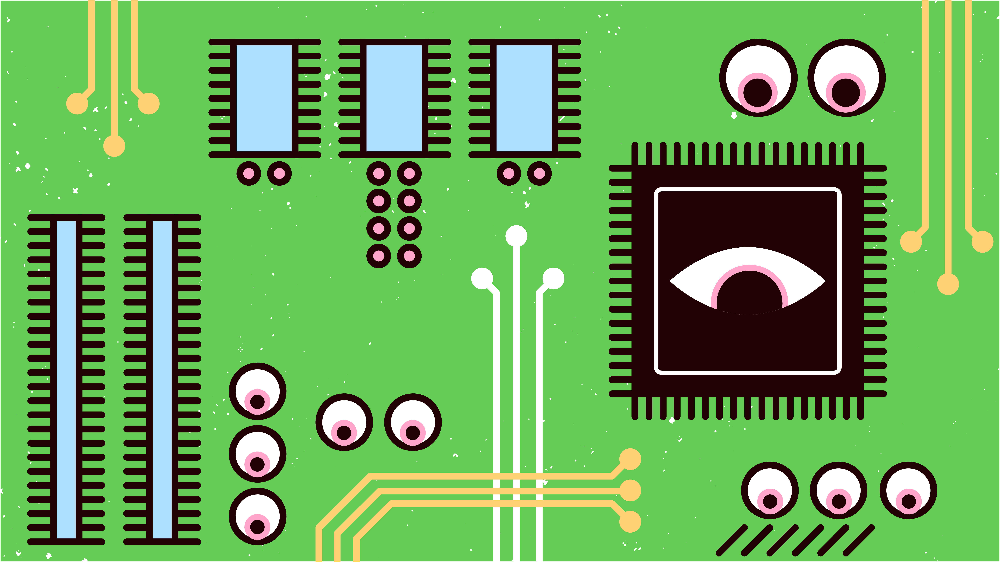
ALGORITHMS & USING
ARTIFICIAL INTELLIGENCE
Artificial Intelligence is concerned with creating useful, intelligent artifacts as well as using the computational metaphor to shed light on the human experience. Research in my group typifies both goals. For example, last year we won firstprize at the computer billiards tournament in the International Computer Olympiad in Beijing (this followed the lesser known Olympiad there, involving human athletes). Our algorithms had to reason about physics, uncertainty, time and space, as well as about the opponent. They had no explicit mental state, but certainly we spoke of their shot plans, the beliefs about the opponent, and their decisions. Meanwhile, I am collaborating with philosophers on the theoretical study of these very notions. we are looking at logical theories of intention, and in particular how intentions are kept consistent not only with each other but also with the agent’s beliefs. we cannot intend to drive to San Francisco if we believe our car is broken, or if we intend to drive to San Jose at the same time.
Some are offended by even considering the possibility that computers may have mental state. They find that it demeans humans and undermines the underpinnings of moral behavior. I don’t. If computers can in some sense feel it does not diminish the value of my love for my family. My obligations to my fellow man do not hinge on a distinction between people and machines. These are both part of what makes me who I am. If anything, the questions we’re discussing help me understand that part better. And we also learn something about computer science in the process always a good thing.
ARTIFICIAL INTELLIGENCE